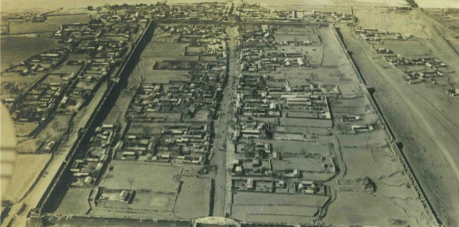
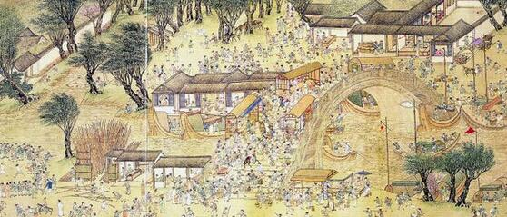
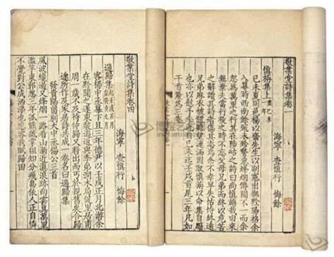
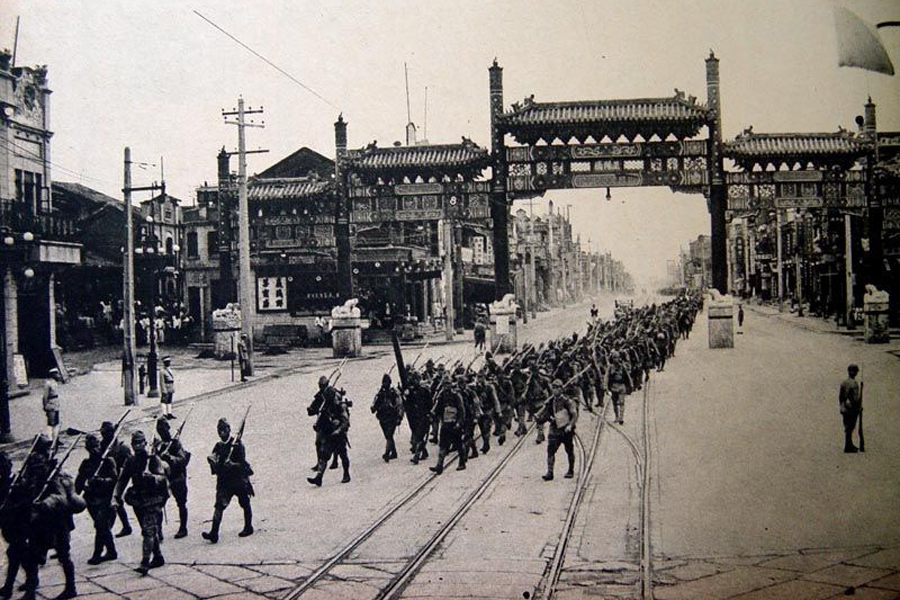

金元时期

早年间，永定河畔居住有一个姓田的船老大，靠摆渡谋生。镇上有个卢姓的生意人，很有经济头脑，在当地负有盛名，做买卖赚了很多钱。这年秋天，他想回家看看， 起程返家。来到摆渡口，正巧遇上那个姓田的摆渡人，两人讲好价钱后，生意人就上了船。摆渡人见生意人钱财很多，便起了歹心，故意慢腾腾地划船磨蹭时间。当时永定河上风大浪急，船到河心摇晃得很厉害，摆渡人借机三摇两晃地把卢姓生意人摇晃到河里去淹死了，从此这个田姓摆渡人不再干摆渡活了，他私吞了生意人的财物，做起了大买卖。）
后来摆渡人生了一个儿子，儿子很聪明，特别招人喜欢。可是到了八岁的时候，这孩子就变了，每天都要打他爹爹六个嘴巴子，一边打还一边说：“天也大，地也大，你贪财把人推河下，伤天害理出人命，我不打你长不大。”为此这个摆渡人非常苦恼。这个孩子为什么会念这段顺口溜的呢？原来是一个老和尚教的，这老和尚住在河边的一个寺里，那天他亲眼看见摆渡人害死了姓卢的生意人。于是老和尚待摆渡人的儿子长大懂事后，就教这个孩子这么做
摆渡人常常做恶梦，每次都梦到那个姓卢的生意人。他痛苦不堪，只好去寺里向老和尚求救，老和尚闭着眼说：“你把你所有的钱财都拿出来，在这儿修一座桥吧，你儿子就不会再打你，你也能睡个安稳觉了。”摆渡人听了老和尚的话后，回去就把买卖收了，他请了很多工匠用了三个月的时间，建了一座桥。桥叫什么名字呢？老和尚说：“你这桥是还姓卢的帐，但愿桥建成了，你的帐能一笔勾销，这桥就叫卢沟桥吧。”
明代

宛平知县沈榜撰写的《宛署杂记》，保留了万历前期该县大量的经济数据。通过对财政收入和支出数据的梳理，可以看出，当时该县已陷于入不敷出的财政窘境，主要原因是朝廷免除了下等铺户纳银，提高了契税的起征点并降低了税率，而该县承担的经费不但未能相应减免，反而逐渐增加。在赋役改革方面，该县取得明显进展，绝大多数项目都实现了纳银化或以银计算，夏税、秋粮內各项已合并征收，部分徭役摊入地亩。但也应看到，赋役改革远未最终完成，起运的地点和数量仍然极其琐碎分散，力役在徭役结构中仍然占据着主导地位。随着各地粮草物料的纳银化，北京的“商役”日益沉重，造成了经济凋敝和民生艰困。
沈榜感慨作为首善之区的宛平县历来无志，他说自己在地方上干县官的时候，还能够看到一些文字资料，而到了京城的宛平则看不到像样的志书。因为没有志书，查阅起资料来，就感到无从下手，“茫然无可备咨询。”于是他就凡遇上事情，一一记录下来，从宣谕、政令到断片残简，民间掌故，都在他的收集范围之内，最后完成了此书。
清代

在清代宛平县生活过的文人中，查慎行是极具代表性的一位。他虽原籍浙江海宁，但长期寓居京师，与宛平文化圈关系密切。
查慎行原名嗣琏，字夏重，后因卷入洪昇《长生殿》案被革去国子监生资格，改名慎行，字悔余，号初白。康熙二十八年后，查慎行长期寓居北京，宛平成为其重要活动地。他因诗才受宠于康熙帝，42岁以举人身份入直南书房，后赐进士出身，官至翰林院编修。他多次扈从康熙帝出巡，足迹遍及华北、塞外，创作大量纪实诗作，如《随驾猎南海子》等，记录宛平周边风物。雍正四年，其弟查嗣庭因“维民所止”文字狱获罪，查慎行受牵连被逮，次年放归后不久去世，折射出清代文人的政治风险。
宛平作为京畿要地，汇聚了朱彝尊、王士禛等文人。查慎行与朱彝尊亦师亦友，受其“宗宋”诗风影响，主张“诗之厚在意不在辞”，作品兼具学问与性情。他善写民间疾苦与社会现实，如《宛平道中见流民》描述京郊灾民惨状：“草根卖尽卖儿女，哭声夜半依荒田。”诗集中常见卢沟桥、西山、良乡等宛平周边地名，如《卢沟桥》：“沙浑石险岸容斜，立马桥头日欲遮。”作为“清初六家”之一，他的诗集《敬业堂集》达50卷，被《四库全书》收录。他的诗以白描见长，如“月黑见渔灯，孤光一点萤” ，语言清新却意境深远。
宛平作为京郊文化枢纽，为查慎行提供了观察社会的窗口。其诗作既记录了这一地区的自然与人文风貌，也反映了康熙盛世下隐藏的民生困顿。他的经历典型体现了清代文人如何在政治中心与个人志趣间寻找平衡。
民国时期

1937 年7月7日夜，屯兵在卢沟桥西的日军悍然向中国军队发起袭击，驻守在卢沟桥头、宛平城里的二十九军将士英勇反击，从而掀起了全国性的抗战，也揭开了世界反法西斯战争的序幕。“七七事变”是中国人民抗日自卫战争的起点，也是东方及太平洋地区反法斯战斗的起点 。
日军炮击宛平城后，城内百姓不顾危险，主动帮助29军士兵修筑防御工事，用门板、沙袋加固城墙，甚至拆掉自家房屋的砖石供军队使用。战斗激烈时，城内百姓自发组织起来，为守军送饭、送水。妇女们熬粥、蒸馒头，冒着炮火送到前线。许多人家主动收留伤员，用土方草药为士兵止血疗伤。由于日军封锁，城内守军与外界的联系被切断。一些熟悉地形的百姓（如农民、小贩）冒险出城，为29军传递情报，甚至引导援军进入宛平。
七七事变标志着中国全民族抗战的开始，揭开了世界反法西斯战争东方战场的序幕。卢沟桥成为中国抗战精神的象征，至今仍被视为中华民族不屈抗争的标志。七七事变不仅是军事冲突，更是中华民族生死存亡的转折点，其历史教训警示后人：勿忘国耻，振兴中华。
新中国时期

新中国成立后，该地区在城市建设、经济发展和文化保护方面取得了显著成就，既保留了抗战记忆，又融入了现代化发展。
1950—1960年代，卢沟桥及周边道路得到修缮，成为连接北京西南的重要通道。1980年代后，丰台区交通网络进一步完善，地铁14号线等公共交通设施极大便利了居民出行。历史上永定河洪水频发，1950年代起，政府修建官厅水库、加固堤坝，减少水患威胁21世纪后，永定河生态修复工程启动，沿岸建成“卢沟桥滨水公园”，成为市民休闲场所。
中国人民抗日战争纪念馆是全国最大的抗战专题博物馆，收藏大量历史文物、照片和档案。每年7月7日举行纪念活动，国家领导人曾多次出席。1961年，卢沟桥被列为全国重点文物保护单位。1980年代后，宛平城恢复明清风格，成为爱国主义教育基地。
从抗战烽火到现代化城区，宛平地区在新中国的发展中既守护了历史记忆，又焕发出新的活力。今天的宛平，不仅是爱国主义教育的重要基地，也是北京西南部宜居宜业的城市空间。它的变迁，折射出新中国如何在发展中传承历史、面向未来。